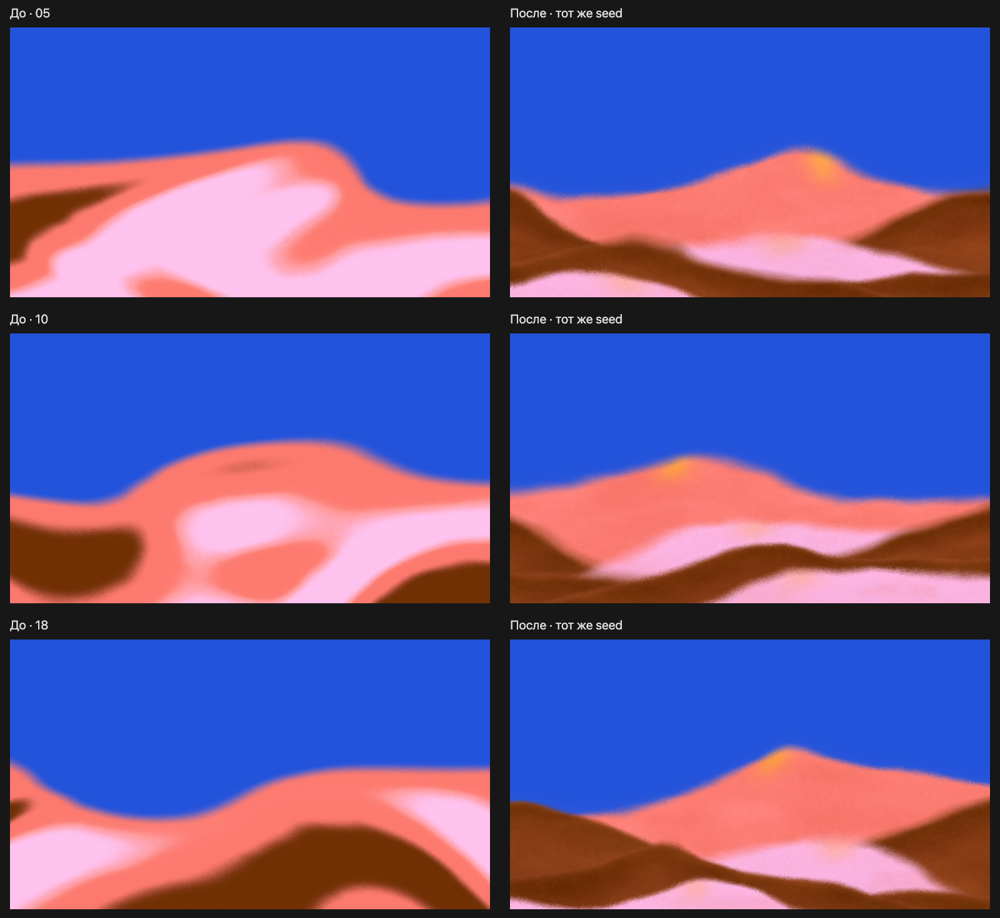
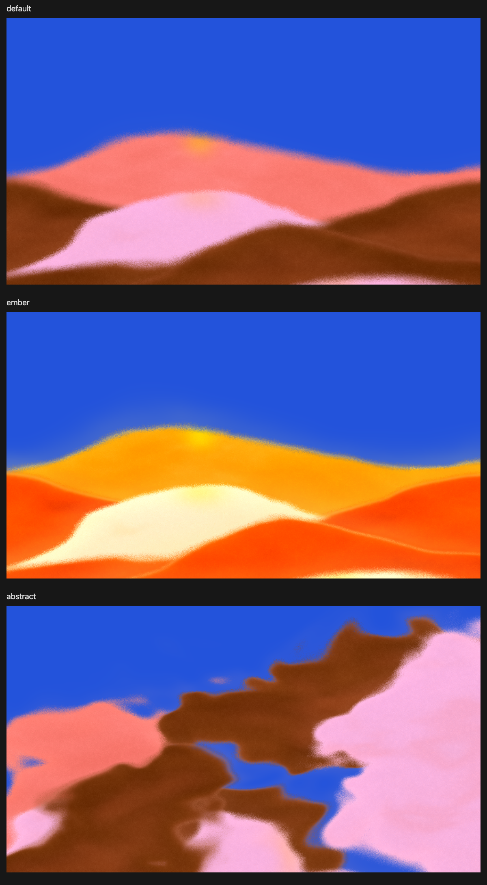

Новый рендерер, прежние настройки и те же 20 seed: 1920 × 1080. Между вариантами меняется только seed. Все 20 seed сохранены в manifest.json; повторный запуск воспроизводит ту же выборку.
Сохранённая выборка до добавления настроек смежных оттенков


